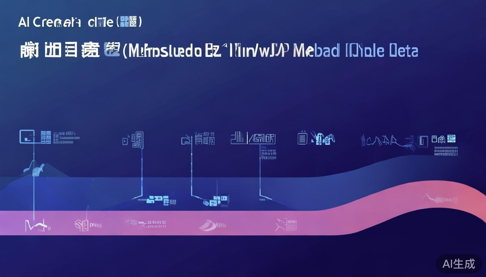

从跟跑到并跑：中国 AI 发展史（附 DeepSeek 时刻复盘）
摘要：从实验室里的控制论萌芽，到互联网与移动互联网的海量数据积累，再到人脸识别、语音、安防、自动驾驶的追赶，最后到大模型「百家争鸣」与 2025 年「DeepSeek 时刻」——中国 AI 走完了一条长达半个世纪的跟跑之路。这篇文章不吹不黑，梳理这条主线，复盘梁文锋与 DeepSeek 的底层逻辑，说清国产 AI 真正的护城河，最后落到一句话：对普通人和创作者而言，这次并跑意味着什么。
一、漫长的积累期：从实验室到互联网
很多人以为中国 AI 是 ChatGPT 之后才「突然冒出来」的。错。这条路的起点，可以追溯到半个世纪前。
20 世纪 50 到 60 年代，国内已有一批学者在控制论、模式识别、机器翻译上做早期探索——那是全球人工智能的第一次浪潮，中国没有缺席，只是体量很小。真正决定命运的是后面两个基础设施的成型：
其一，1994 年接入国际互联网。 这一年，中国通过中科院高能物理所正式接入互联网。此后十年，搜狐、新浪、网易、腾讯、阿里、百度相继成立。别小看这些「门户和搜索」，搜索引擎本质就是信息检索——一门最古老的人工智能学科；而电商、社交沉淀下来的，是后来训练模型最稀缺的东西：数据。
其二，云计算与移动支付的爆发。 2010 年前后，阿里云、腾讯云把算力变成水电煤，二维码支付把 14 亿人接入数字世界。当算力、数据、场景三样东西同时到位，AI 才第一次有了「长大成人」的物质条件。
这一阶段的中国 AI，身份是学生：论文、算法、框架，都在向西方学习。但它在悄悄攒家底。
二、移动互联网：应用土壤的成熟

如果说基础科研是种子，那移动互联网就是土壤。三个名字绕不开：
- 微信（2011）：把社交、支付、小程序、政务塞进一个 App，创造了全球罕见的「超级应用」生态，也让中国成为全球移动互联网渗透率最高、场景最密的市场。
- 字节跳动（2012）：从今日头条到抖音，字节把「推荐算法」这件事做到了极致。信息流推荐本质是 AI 在每天对数亿人做实时决策——中国工程师由此练出了全球顶尖的大规模 AI 系统工程能力。
- 小米（2010）：用性价比和生态链铺开了硬件入口，后来又在 IoT、智能家居上布局，让 AI 从「屏幕里」走向「设备里」。
这段历史的意义不在产品本身，而在它带来的一场「工程训练」：双十一的并发、春运的调度、短视频的推荐，这些真实世界的极端场景，把中国团队逼出了全球一流的工程执行力。应用为王、场景为王，成为刻在中国 AI 骨子里的基因——这是后面所有故事的前提。
三、追赶期：感知智能的黄金十年
2016 年 AlphaGo 击败李世石，是全球 AI 的「引爆点」，也是中国 AI 的「冲锋号」。2017 年，国务院印发《新一代人工智能发展规划》，第一次把 AI 上升为国家战略。
但这一阶段中国最出彩的，不是通用智能，而是感知智能——让机器「看」和「听」：
- 人脸识别：商汤、旷视、依图、云从并称「AI 四小龙」，在计算机视觉顶会论文、ImageNet 竞赛里和美国团队打得有来有回。人脸识别落地之深，全球无出其右——刷脸支付、刷脸进站、刷脸开锁。
- 语音：科大讯飞把中文语音识别、合成做到实用级，让「听写」成为亿万人的日常。
- 安防：海康威视、大华把视觉 AI 装进城市监控，中国成为全球智能安防的绝对主力。
- 自动驾驶：百度 Apollo（2017）开源平台，小马智行、文远知行、Momenta 在 Robotaxi 上与国际玩家同台竞技。
客观地说，这个十年的中国 AI 是「强在感知、弱在认知」：看得见、听得懂，但想不清。而且产业链有短板——高端 GPU、底层框架、训练芯片，长期依赖进口。这给后来埋下了两个伏笔：一个是「卡脖子」的焦虑，另一个是「必须自己算」的决心。
四、百家争鸣：大模型时代的中国军团
2022 年 11 月 ChatGPT 发布，全球进入大模型时代。中国的反应速度，比以往任何一次技术浪潮都快。
2023 年是「百模大战」元年：百度文心一言（3 月）、阿里通义千问（4 月）、智谱 GLM、讯飞星火、商汤商量先后发布，随后月之暗面 Kimi、字节 豆包、MiniMax、零一万物、百川等加入战局。到 2023 年底，中国已发布的大模型超过 200 个，「百模大战」名副其实。
2024 年格局逐渐清晰，几家真正站稳了脚跟：
- 文心一言：百度押注最早、生态最全，走「模型 + 搜索 + 智能云」路线。
- 通义千问（Qwen）：阿里走开源路线，Qwen 系列在国际榜单和 Hugging Face 上长期霸榜，成为全球开发者使用最广的开源模型家族之一。
- 豆包：字节靠 C 端投放和产品化打穿下沉市场，到 2025 年底月活约 2.27 亿，断层领先国内 AI 助手。
- GLM：智谱走「学术基因 + 全栈自研」，是国内少有的从预训练框架到模型都自己做的团队。
- Kimi：月之暗面靠「长文本」出圈，掀起一轮「上下文长度军备竞赛」，主打深度阅读与研究场景。
还有一个容易被忽略的信号：2024 年 5 月，DeepSeek 发布 V2，率先把大模型 API 价格打到「每百万 tokens 输入 1 元」的量级，直接引发全行业价格战，被外媒称为「AI 界的拼多多」。当时多数人只把它当一场营销，几乎没人意识到，这家公司正在用「极致性价比」倒逼整个行业的成本曲线下行——而这条曲线，几个月后就要被它自己踩出一条陡坡。
但要说清楚：直到 2024 年，中国大模型整体仍处于跟跑——能力对标 GPT，产品对标 ChatGPT，心态上「追赶美国」是主旋律。真正打破这个局面的，是一家几乎不做应用、不着急融资、员工不到 200 人的小公司。
五、2025「DeepSeek 时刻」：从跟跑到并跑
2024 年 12 月 26 日，一家名不见经传的公司发布了 DeepSeek-V3：一个 6710 亿参数的 MoE 模型，性能对标 GPT-4o，但训练成本仅约 557.6 万美元——而美国同行的同类模型动辄数亿美元。这是第一声惊雷。
2025 年 1 月 20 日，DeepSeek-R1 发布，一个开源的推理模型，性能对标 OpenAI 的 o1，权重全开、MIT 许可，任何人都能免费商用。这一次，全球炸了：
- 1 月 27 日（美国时间），DeepSeek 应用登顶美国区 App Store 免费榜，随后横扫全球多国榜单；
- 同一周，英伟达单日暴跌约 17%，市值蒸发约 5890 亿美元，创美股历史单日最大蒸发纪录；
- 微软、亚马逊、英伟达等巨头纷纷宣布接入 DeepSeek 模型；国内从微信、政务到各行各业掀起接入潮。
媒体给它起了一个后来被反复引用的名字——「DeepSeek 时刻」。它戳破的不是某一家公司，而是两个长期被默认的「刻板共识」：一是「美国在 AI 上领先且差距在拉大」，二是「算力是唯一门槛、芯片可以卡死一切」。
更关键的是开源维度的变化：DeepSeek、Qwen、GLM、Kimi（K2 开源）等中国模型，在 Hugging Face 上的下载量与衍生模型数量长期居于前列，海外开发者开始把中国开源模型当成默认选项之一。具体的排名与占比以 Hugging Face 公开榜单为准——数字每周都在变，这里只说明趋势。当「跟跑」这个词越来越不贴切时，这次事件的真正意义才显出来。
六、复盘 DeepSeek：梁文锋与一场「理想主义实验」
DeepSeek 的崛起，绕不开一个人——梁文锋。
他 1985 年生于广东湛江吴川，本科与硕士都就读于浙江大学，学的是电子信息与通信。毕业后没有去做热门的方向，而是一头扎进了量化投资：2008 年开始研究量化，2015 年成立幻方量化，到 2019 年管理规模突破百亿，成为国内头部量化私募。
量化交易和 AI 的共通点，是算力 + 算法。幻方早年就重金自建 GPU 算力集群（「萤火」系列），2021 年前后便坐拥数千张高性能 GPU。2023 年 5 月，幻方孵化出 DeepSeek（深度求索），梁文锋把量化赚到的钱和算力，投进了一个听起来「不划算」的方向——通用人工智能的基础研究。
DeepSeek 的特别之处，不在于「又做了一个模型」，而在于它的路径选择：
一是技术理想主义。 它不融资、不做 C 端应用、不急着商业化，把精力全部压在模型本身。梁文锋那句广为流传的话是最好的注脚：「中国 AI 不可能永远跟随，必然有人站到技术的前沿。」在他这里，这是信仰，不是口号。
二是极致成本控制。 DeepSeek 用 MoE 稀疏架构、FP8 混合精度训练、多头潜在注意力（MLA）等一系列工程创新，把「大力出奇迹」改写成「巧力出奇迹」。557 万美元训出 V3 这件事，本质是向全世界证明：智能的获取，未必只能靠堆算力，还可以靠极致的工程和算法。
三是彻底开源。 权重全开、MIT 许可、可商用，甚至发布蒸馏小模型让开发者低成本落地。这不是「放出来引流」，而是把开源当作一种技术扩散与生态战略——让全世界开发者用脚投票，选中国模型做地基。
四是年轻的本土团队。 DeepSeek 的核心成员大多来自清北等顶尖高校的应届生和博士生，平均年龄极低，几乎全是本土培养的人才。这本身就是一个信号：中国的人才池，第一次在「定义前沿」的位置上被证明了价值。
DeepSeek 引发的震动，表面是股价和榜单，深层是信心——它让「中国团队也能做世界级原创」从一个愿望，变成了一件被反复验证的事实。
七、国产 AI 的独特优势：护城河不在别处
DeepSeek 不是孤例，它只是把中国 AI 的四条护城河放到了聚光灯下：
应用场景。 14 亿人口、全球最大互联网市场，叠加全球最完整的制造业与庞大的政务体系，让中国拥有全球最丰富的真实场景。场景产生数据，数据反哺模型，模型再回到场景——这条飞轮，是任何实验室都造不出来的。
工程与成本控制。 从双十一、春运到「价格战」，中国团队练出了全球顶尖的规模化工程能力和极致性价比打法。当别人拼「参数有多大」时，中国团队拼「同样的智能，能不能便宜一个数量级」。这在推理成本成为瓶颈的今天，是最锋利的武器。
开源生态。 Qwen、DeepSeek、GLM、Kimi 等开源模型，让中国成为全球开源大模型的重要源头。开源不是「放弃商业」，而是把「技术标准」和「开发者心智」牢牢握在手里——这是当年 Android、Linux 验证过的生态打法。
人才。 全球规模最大的 STEM 毕业生群体，加上数学竞赛、算法竞赛几十年沉淀的「算法人才红利」，正在大模型时代集中兑现。DeepSeek 那支平均不到 30 岁的团队，就是最直接的证明。
八、结尾：这次并跑，对普通人意味着什么
回到你最关心的那个问题：中国 AI 从跟跑到并跑，跟我有什么关系？
第一，工具平权了。 今天最先进的开源模型，权重免费、可商用、能本地部署。这意味着，一个小团队、甚至一个人，第一次能和巨头站在「同一模型底座」上竞争。过去卡住你的不是算力，而是「想清楚做什么」。
第二，别神化，也别轻视。 大模型会一本正经地编造数据和引文，事实核查永远不能外包；同时它也真的能把「做出来」的成本打到接近零。你对它的态度，应该像对一台没有阅历、但能力极强的机器：它负责快，你负责对。
第三，护城河变了。 当「生成」变得廉价，「判断」成了唯一的稀缺品。AI 时代的创作者，拼的不再是谁写得快、画得细，而是谁有真实的经历、锋利的观点、以及「知道往哪个方向用力」的判断力。
从实验室里的几行控制论代码，到 2025 年震动全球资本市场的 DeepSeek 时刻，这条路中国走了大半个世纪。而真正重要的，是它终于证明了一件事：前沿，不是某个国家的专属席位；技术理想主义，在任何土壤里都能开出花来。
对你我而言，最好的时代不是「AI 替我们做完一切」的时代，而是「AI 让我们终于有时间做回自己」的时代。工具已经就位，地基已经免费，规则已经被重新书写。剩下的问题只剩一个：当一切都能被生成时，你想生成什么？
（本文正文约 4300 字，聚焦「从跟跑到并跑」主线，重点复盘 DeepSeek 时刻。文中关键数据如 DeepSeek-V3 训练成本约 557.6 万美元（DeepSeek-V3 技术报告 arXiv:2412.19437）、R1 发布于 2025 年 1 月 20 日、英伟达单日蒸发约 5890 亿美元、豆包 2025 年底月活约 2.27 亿等，均基于公开报道整理，建议引用前再次核验。）
出处声明：本页内容为白驹 ccowork原创，或已标注引用来源；改编内容遵循原始项目许可证（如 MIT / CC），不侵犯原作者权益。若引用内容涉及版权问题，请联系我们更正。